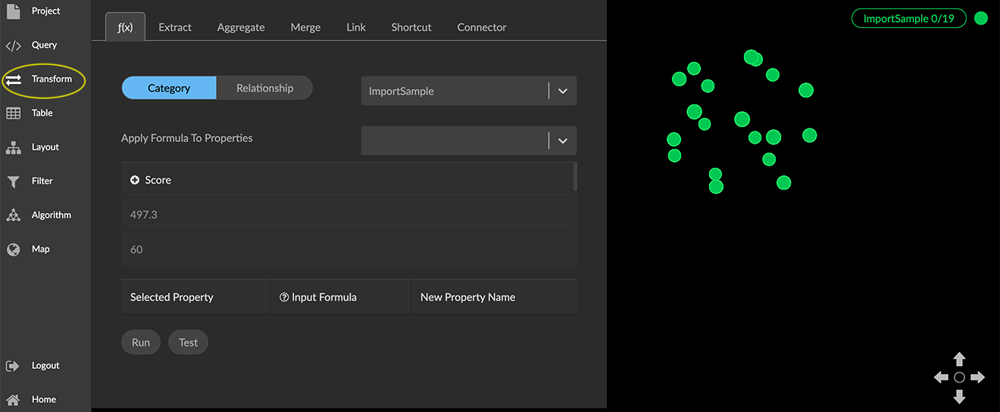
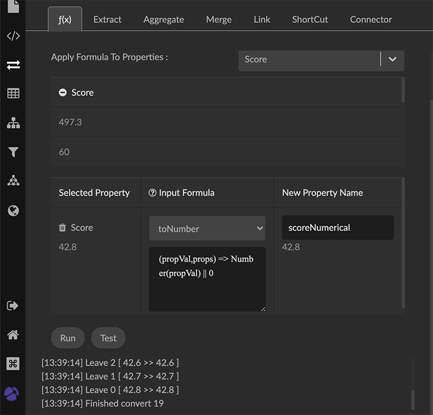
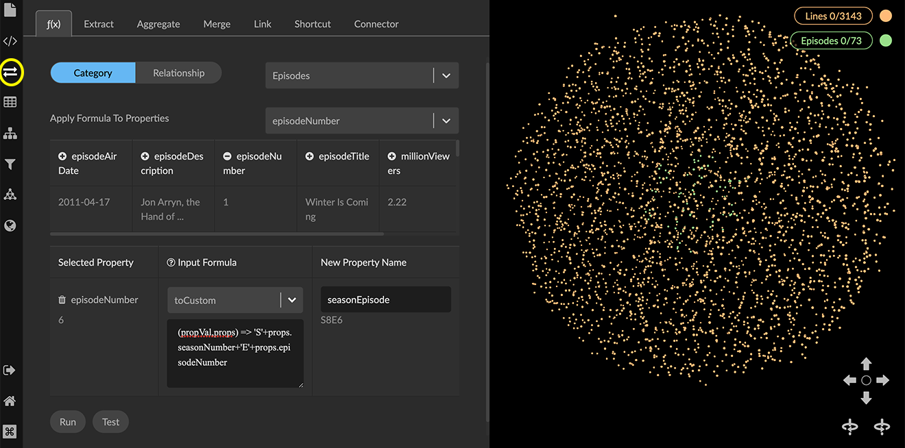
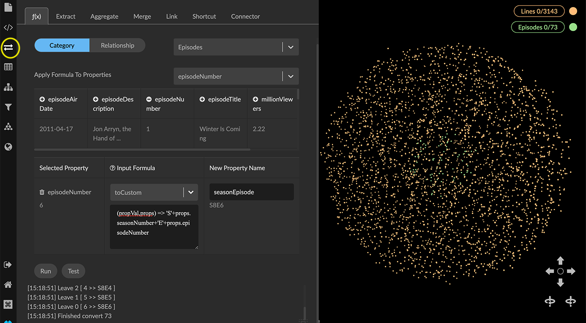
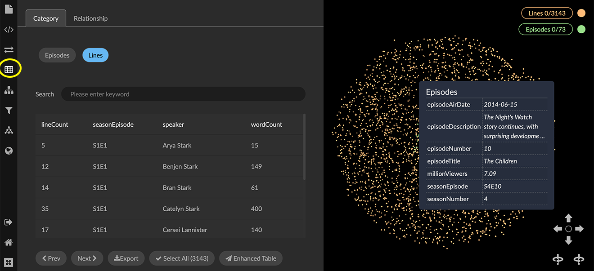

Reformatting Data with fx With graph-based f(x) functions you can calculate values based on existing properties and write the results back to the source nodes or edges. This capability is similar to formulas in Excel and SQL, and functions in a MapReduce framework. An f(x) formula lets you run javascript formulas on a single category or relationship. You select existing properties in the data to create new properties according to pre-defined or custom formulas. f(x) Preset formulas The following table lists the available preset formulas and their general formats. Preset Function Format toCustom Editable format (propVal,props) => propVal toNumber String or Number => a Number (propVal,props) => Number(propVal) | 0 toString String, Number, or Date => a String (propVal,props) => String(propVal) toDate Valid date-time => a YYYY-MM-DD HH:mm:ss timestamp (propVal,props) => moment(propVal).format('YYYY-MM-DD HH:mm:ss') toWeek Valid date-time => a weekday (e.g. Monday) (propVal,props) => moment(propVal).format('dddd') convertCustomDate Custom date format MM,DD,YYYY => a YYYY-MM-DD HH:mm:ss timestamp (propVal,props) => moment(propVal, "MM,DD,YYYY").format('YYYY-MM-DD HH:mm:ss') fullName Combine firstName and lastName property values => the new property, as a full name. (propVal,props) => !props['firstName'] ? propVal : ${props['firstName']}-${props['lastName']} Editing a preset moves it to the toCustom item, where you can test or run the edited formula. Running a preset f(x) formula Formulas apply to a single category or relationship at a time. However, you can run more than one formula at a time on a selection of data. In the following example numerical data in the file ImportSample.csv has been entered as a text string. We’ll use the toNumber preset to transform the data to numerical values. To run preset formulas to create and populate new properties: Deselect all the data in the graph space to ensure that the transform applies to all nodes or edges of a specified Category or Relationship. Open the Transform panel and f(x) tab. Select a Category or Relationship for the data you want to operate on (e.g. ImportSample). In the Apply Formula to Properties dropdown, select the property value to transform (e.g. Score), or click the + icon in the table of properties below the dropdown to select it. The review panel below the properties shows a sample of existing values and their data formats. Choose a preset formula from the dropdown menu, in this case, *toNumber*, to convert the Score text string to a numerical value.  Enter a new property name (e.g. scoreNumerical) to save the result. Or you can use the default, which simply adds _new to the Selected Property name. It is usually best to create a new property and give it a descriptive name. Entering the source property name overwrites the existing data, which may be appropriate in some cases. Check the sample input and output property values for the formula (displayed beneath the Selected Property and New Property Name, respectively) to see that the formula returns values you expect. If the input property value is invalid for a selected formula the area below the new property name displays a brief description of the problem. In this example, we’ll run just one formula. However, at this point, you can: Add more formulas (for example to transform other property values available in the selected Category or Relationship). Delete a formula by clicking its Trash icon. Once you have added all the formulas you want, you can scroll to the bottom of the panel and either: Click Test to run a test and review the results. OR Click Run to create the new property values for the category or relationship. The new property will be added to the selected category or relationship and the calculated value will be added to each node (or edge) that includes valid input. Messages appear below the Run and Test buttons showing the results, including the number of nodes with the new property.  Running a custom f(x) formula Custom formulas enable you to use javascript functions to handle complex data conversions, and also to bring multiple properties into a single property. The libraries Lodash.js and Moment.js are supported. Examples use the open-source dataset for the HBO Game of Thrones series. For a hands-on exercise see our How to GraphXR tutorials. We’ll use a custom formula to reformat existing properties in our dataset and write them to a new seasonEpisode property. First we import two CSV files by drag and drop: Lines.csv, with details about dialog spoken in the show. In the imported the Lines category, season and episode number are combined into a single seasonEpisode property as a text string (e.g. 'S1E3'). Episodes.csv, with details about the show’s episodes. In the imported Episodes category, seasonNumber and episodeNumber are separate properties with integer values (e.g. '1'). We want these combined into a single string and written to a new seasonEpisode property to match Lines. To run a custom formula to create a new property: Deselect all the data in the graph space to ensure that the transform applies to all nodes or edges of a specified Category or Relationship. Open the Transform panel and f(x) tab. Click Category and select the Episodes category from the dropdown menu. Click episodeNumber in the list of properties to add it to the Selected Property list and display your Input Formula options. In the New Property Name textbox, enter seasonEpisode. Select toCustom from the Input Formula menu, and enter the following javascript formula: (propVal,props) => 'S'+props.seasonNumber+'E'+props.episodeNumber As you enter a formula, a sample result appears beneath the new property name. If there is a problem with the formula or the source data, a brief message appears (for example, "Invalid input").  Click Test to test the custom function, or Run to run it. In either case a message shows the result of the transformation, including the number of nodes with the new property.  To inspect the new seasonEpisode property and its values, open the Table panel and select the Episodes category. You can also see the new property in a node’s information panel. 